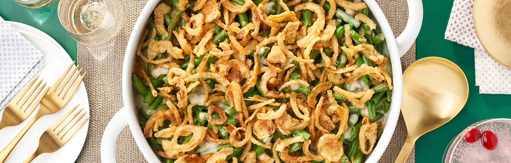

Green Bean Casserole

| Prep Time: |
10 min |
| Total Time: |
40 min |
Description
For as long as I can remember, this dish was at every holiday dinner my family was attending.
We might be starting new traditions, but this will always be a part of it. Even though this was
taken straight off the back of the Campbell's Cream of Mushroom soup can, this is definitely my
favorite dish on this list.
Ingredients
- 1 can (10 1/2 ounces) Campbell's Condensed Cream of Mushroom Soup
- 1/2 cup 2% milk
- 1 teaspoon soy sauce
- 4 cups cooked cut green beans (french cut preferred)
- 1 1/3 cups French's French Fried Onions
Instructions
- Heat oven to 350°F. Add soup, milk, soy sauce, green beans, and 2/3 cup of the onions
into a casserole dish and mix until combined well
- Bake for 25 minutes or until bubbling. Stir and cover with the remaining 2/3 cup onions
- Bake another 5 minutes or until onions are golden brown. Let rest until the dish thickens
- Enjoy!
Home
Top of Page